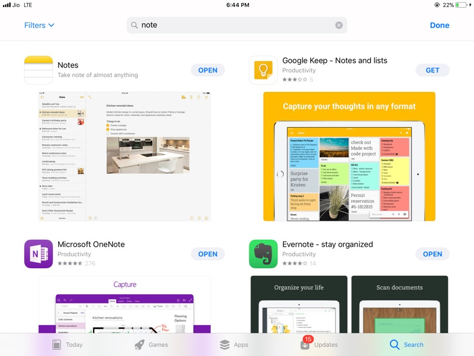

Ranjith R Dixit
Choices
With all the apps in the App Store or the Play Store, it is getting harder and harder to actually find the perfect app for your need. For example, trying to get a note-taking app. I got Apple Notes, OneNote, Google Keep and Evernote as the first four apps. I found forty results plus two app collections.....
In fact, this is not there only in choosing an app to get. It’s there everywhere, from getting shoes, chips, jam, butter, bread, chocolates, mobiles, cars, websites, etc., etc., etc.

Choices have changed our life, for the better or the worse. Here, let’s stick with the better. In fact, you have a thing for everything, and it is your fault that you don’t have access to what you want. All you have to do is to go on Amazon.com and get what you want. Or AppStore.com. Whichever site, really. The best thing about the whole thing is that you have what you want. Whatever that is. Even opinions. I mean, we’re living in a world with eight billion people, so surely there must be one other person who is sharing you opinion. In fact, a million people, even if 99.9% of the people are against you.
I guess that’s what democracy is about. Choices for what you’re doing. There is always a minority; there is always an opposition. Always a place to call home, or rather in this case, always have an opinion which you can say people support.
I’ve done two surveys here, with different questions. I’ve not written the name of the person who answered the question, but I have an average at each survey.
Survey: How many people are negative and positive against choices.
Question: “Do you think having choices is good?”
Average: Yes
1. Yes
2. Yes
3. Yes
4. Yes
5. Yes
Survey: If people want more or less choices.
Question: “Do you think that there should be a lot of choices or less choices?”
Average: Less
1. More
2. Less
3. Less
4. Less
5. Less
So people like choices. No doubt about that. But people want less choices.
So these are the results from my surveys. You might say people are totally bent on having choices, but they are quite particular about how many are there. People always like being in the middle zone. There are so many types of choices that it makes you go round in circles to choose which one you want. But obviously, even if there are two or a million choices, I don’t think there is really the perfect choice even for the total average.
Ranjith R Dixit
September 21 2017: Tuesday, Original Post Date: July 25 2016: Monday
Global Warming
Global Warming can be described as an event or an era in human history. if global warming is an event that is going to happen in the future, we can stop it. We can’t stop it until it happens if we are not the source of it. But if we are the source of it [which is 100% true], we can actually stop it before it begins. In the era perspective, we cannot predict it until it actually happens, but if we are the cause of it then the prediction is possible for those who are not the cause of it, but since we are all the cause of it, 90x9 people who continue to do it and not do anything about them doing it, it is a huge problem in both the perspectives. It is in the event perspective easier to solve this problem than the era perspective, but this event will be a very long event and date is DOOA [dependent on our actions]. The event will lead in a new era, and this event will change history of the Earth as well as humans and nature. Or this era will do all that.
The cause of global warming is humans. Humans have destroyed the balance of greenhouse gases and oxygen in the atmosphere, so there is actually no ‘most polluted city’. If it were so, than Tokyo would be for its content of atmosphere. Pollution is the main cause of global warming. It is the cause, while deforestation destroys the prevention, therefore increasing space for the cause. Pollution is caused in various ways, but only one is necessary for global warming:
Air pollution- This is caused by aircrafts, industries, cars, trains, coal stations, etc. When these gases get into the atmosphere, they trap heat. Since the heat cannot escape, The oceans and seals consume it and release it at cold regions, thus making it warmer. The Arctic and Antarctic ice sheets melt because of the trapped heat.
Deforestation is the mass destruction of forests. Forests convert carbon dioxide into oxygen. Destruction of trees inadvertently lead into more carbon dioxide, and more pollution. However, trees do not convert gases like methane, etc. into oxygen, so we need to stop emitting these gases or start researching new ways to convert these gases or trap them.
Global Warming has various ways in which it shows it self. Some of these ways are:
Habitat Loss - Animals in polar regions are using habitat because of melting ice sheets. One such famous example is the polar bear which has to hunt on sea ice instead of thick ice.
Floods - Cities near the coast will be in danger of being flooded. land seas will be formed. Major urban and rural settlements will be destroyed due to melting polar ice sheets.
Although such calamities are possible, global warming, whether era or event is preventable if we follow some guidelines:
Optimise petrol usage.
Reduce plastic usage.
Plant trees.
Ranjith R Dixit
September 5 2017: Tuesday
Coming to the Internet
The Internet has always been considered the stepping stone to absolute connection with everyone. With its pros and cons, it can be awarded the Most Controversial Item, surely. The lifeline of the Internet: HTML. Knowing to code through it is basically like getting a pro membership on your web browser. I have never dreamt coding is not just knowing how to code; it is the art of actually telling Google to search for sites which give info on how to code, because if you come upon an issue in any coding language, the issue is something that has to happen to at least a hundred other people, or else it is a weird problem that you have committed but have not noticed. Now, I making a website I had yearned to do, but had told myself: "later". But the later is now, and we cannot procrastinate forever. This is actually a website that has been coded, and published. It has been quite a way to get to the net.